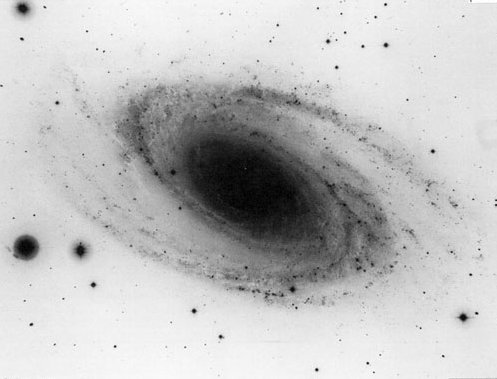

|  |
Instructor: Dr. Jason Pinkney
|
Text:
Introduction to Modern Astrophysics
, (2nd Ed, 2007) by B.W. Carroll, and D.A Ostlie F.
Pearson version: ISBN-13: 978-0805304022
Cambridge Univ Press version: ISBN-13: 9781108422161.
The Pearson and Cambridge versions have virtually identical content,
although their cover pictures are different.
Used copies of BOB (the Big Orange Book) can be purchased online for a
reasonable price, or in the bookstore.
It helps if you have had some intro astronomy (especially PHYS 1061)
before taking this course. So introductory astronomy textbooks
(e.g., Astronomy Today) are kept
on hand in SA 116 for reference. These may be handy when researching
your presentation topic.
Course Description:
In this Introduction to Astrophysics, we will apply physics to the
awesome phenomena of the universe. PHYS 3471 will
go into detail when describing certain aspects of planets,
stars and galaxies, while PHYS 1051 and 1061 cover
a wider range of phenomena much less quantitatively.
We will begin by reviewing astronomical knowledge obtained by ancient
and early astronomers, up to Kepler.
We then tackle orbital dynamics based on the laws of Kepler and Newton.
Our topics will include the celestial coordinate system, orbital
dynamics of the planets and binary stars (Kepler's laws),
The physics of light and particles, including the production of light
from blackbodies and atoms, will be explored. Galaxies and cosmology
will be final topics.
You will learn of the recent developments in astrophysics (with
a preference for cosmology) during the last two weeks.
We will primarily use intermediate-level math: arithmetic, algebra,
geometry, derivatives and integrals.
You will strengthen your knowledge of
mechanics, thermodynamics, and electromagnetic theory and get possibly
your first glimpses of quantum physics and relativity.
Course Objectives:
In this course, students will:
A tentative calendar of topics is outlined below.
Prerequisites:
You need to have passed PHYS 2311 and 2321 along with their labs. This means
that you should have also finished Calc I. It helps to have taken Modern
Physics, Stars and Galaxies, Calc II, and Differential Equations, but
neither I, nor the authors of your text, assume that you know material
from these classes.
Grading:
| Exams: There will be a midterm exam and a final. | 50% |
| Quizzes. Expect 4-6 quizzes. | 25% |
| Homework. Approximately weekly. |
20% |
| Observing. 3 visits, skymaps | 5% |
| Total |
100% |
Your final letter grade is assigned roughly as follows:
|
<55
|
55-68
|
68-78 |
78-88 |
88-100
|
|
|
|
|
|
|
I will not grade any "harder" than the above. However, as the class mean drops below ~75, I will grade more leniently.
| Week of | Topic | Chapter(s) | Graded material |
| 8/26,28,30 | Astronomy up to Copernicus
motions) |
1 |
|
| 9/2 |
LABOR DAY BREAK |
||
| 9/4,6 |
Astronomy up to Copernicus (cont.) |
1, 6.2 |
Hwk1 |
| 9/9,11,13 |
Celestial Mechanics -- Planets. | 2, 18.1 |
quiz1,Hwk2 |
| 9/16,18,20 |
Celestial Mechanics -- Planets, Binary
stars. |
2, 7.2 |
quiz2, Hwk3 |
| 9/23,25,27 |
Celestial Mechanics -- Virial Theorem, clusters. | 2, 27.3 | quiz3, Hwk4 |
| 9/30,10/2,4 |
Light -- magnitudes, light as a wave |
3 | Hwk 5 |
| 10/7,9,11 |
Light -- blackbodies, spectroscopy |
3, 5 |
quiz4, Hwk 6 |
| 10/14-15 | FALL BREAK | ||
| 10/16,18 | Light -- Light as a particle, Bohr atom, quantum #s | 5, 9.1 | EXAM |
| 10/21,23,25 | Stellar properties -- spectral types, binaries |
8,7 |
quiz 5, Hwk 7 |
| 10/28,30,11/1 | Stellar properties -- binary stars, interiors [Presentation topics.] | 7, 10 | Hwk 8 |
| 11/4,6,8 | Milky Way - star counting |
24 | quiz 6, Hwk 9 |
| 11/11,13,15 | Milky Way - Galaxies |
25, 26 | Hwk 10 |
| 11/18,20,22 | Galaxies | 28 | quiz7, Hwk 11 |
| 11/25-29 | THANKSGIVING BREAK | ||
| 12/2,4,6 | Astrophysics in the news / Cosmology | 29 | Hwk 12 |
| 12/9,11,13 | Astrophysics in the news / Cosmology. | 29 | Presentation |
| 12/20 | Fri 2:00 Final, in usual classroom. | _ | Final EXAM. |
Course Policies
Attendance is important for doing well in this course. Absenteeism can directly lower your grade if you miss a quiz or a homework discussion. Let me know in advance (e-mail is good) if you plan to miss for a valid reason (e.g. your team is on the road, you are sick, you have a family emergency). If you will miss a quiz or exam because of an emergency, let me know as soon as possible, and provide proof of the emergency.
Homework will consist mainly of end-of-chapter problems, although I will invent some problems as well. There will be other in-class worksheets that are included in the homework grade. Write out answers neatly on paper and show your work. Remove any frills from the paper. Your homework will not be accepted after the majority of the grading is done. If you foresee yourself missing a deadline because of an excusable absence, again, let me know ahead of time. I encourage you to discuss homework with your classmates, but do not copy their work verbatim. Also, do not copy verbatim from a solution manual. Show that you understand the solution by rewriting it in your own words and with your own variables.
Canvas. I will only use Canvas for a few things unless we need to go online. Here is a link to Canvas . I will make use of the Canvas gradebook, but my primary gradebook is a spread sheet on my laptop. I recommend you save all of your graded work and let me know if your Canvas scores seem different. Canvas will attempt to combine all of your scores into a grade, but will probably not use the algorithm that I will employ. Give me a friendly reminder if I get behind on updating the Canvas gradebook.
Quizzes may be given on non-exam weeks. They cover the
assigned reading and especially the material discussed in
class.
You can only make up a quiz that was missed because of a valid conflict
or emergency. Also, you can only make up the quiz before the
answers are revealed (usually the next period).
Exams will weigh most heavily towards your class grade. There will be a midterm and a final, roughly equally weighted. The final exam will be comprehensive, but will emphasize the last material.
Observing consists of filling out constellation sheets and visiting the ONU Observatory. The constellation sheets include a north- and south-facing map for each of 2 dates during the semester (4 sheets total). Your job is to write the names of the constellations within the constellation boundaries. I'd also like you to draw a box labeled with a date and name for at least 3 transient object that you spot, this includes planets, our Moon, comets, and novae. You also need to put check marks next to at least 6 labelled stars that you actually see while standing under the stars. The constellation labeling can be done on your laptop using the planetarium program "Stellarium". Label all of constellations on the maps, and the 6 brightest stars on each map. For the maximum observing score, you must visit the observatory at least 3 times. Signing the log at the observatory will get you the observing credit. The constellation sheets are due on the last day of class.Disruptions. Please refrain from interfering with the learning in the classroom and from distracting me, the teacher. This includes talking while I'm talking, arriving too late or leaving too early (without an urgent personal reason). I consider texting and surfing the web during class to be disruptive. I'd prefer you don't use laptops in class and certainly not phones. If you have a good way to take notes on a laptop or tablet (one that allows you to draw and write equations), show me and I'll allow it.
Tutoring is provided by yours truly.
Cheating during quizzes and exams will not be tolerated. You may get one warning before you get a zero on that test. For homework assignments, it is usually acceptable and even encouraged to work in groups. However, you should not copy entire solutions from another person without trying to do the problem yourself. Show me some evidence of your "honest" effort. I will use penalties for obvious copying if the need arises.
Common syllabus information. Here is common course information which applies to all courses. This includes Academic Dishonesty, Accomodations, ONU Health and Safety Policy, Title IX, DEI, Grading Modes, Readmission, Repeat Policies, and much, much more!| Astronomy Links | Pinkney's Homepage | The ONU Physics Homepage |
| NED (NASA Extragalactic Database) | Cornell arXive (abstract service) | ADS (abstract service) |